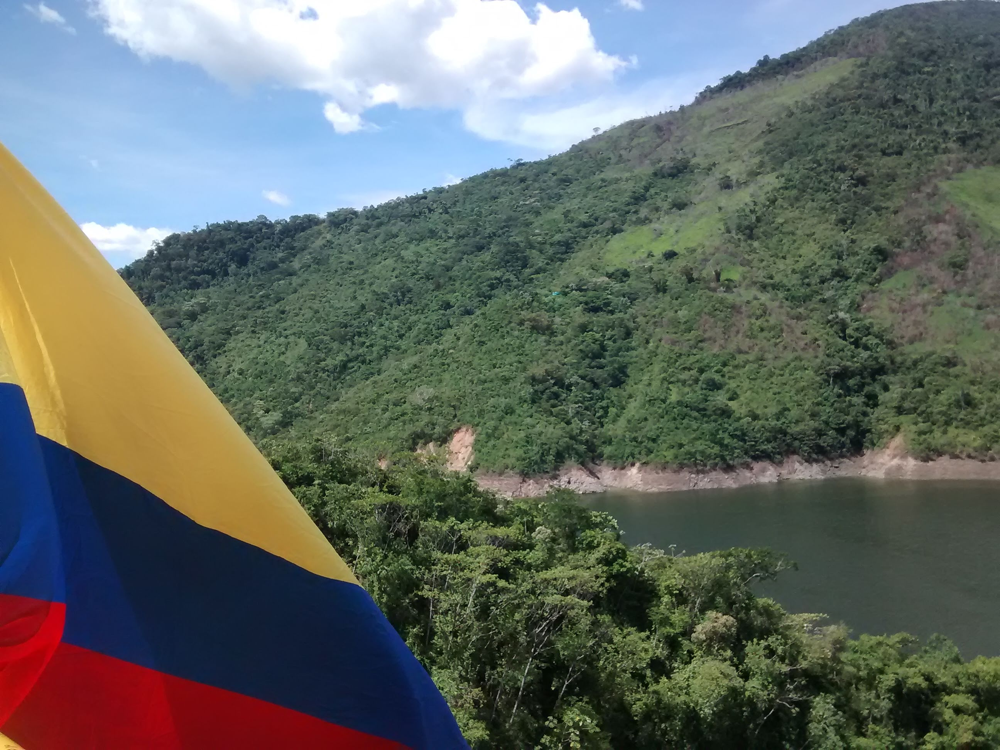
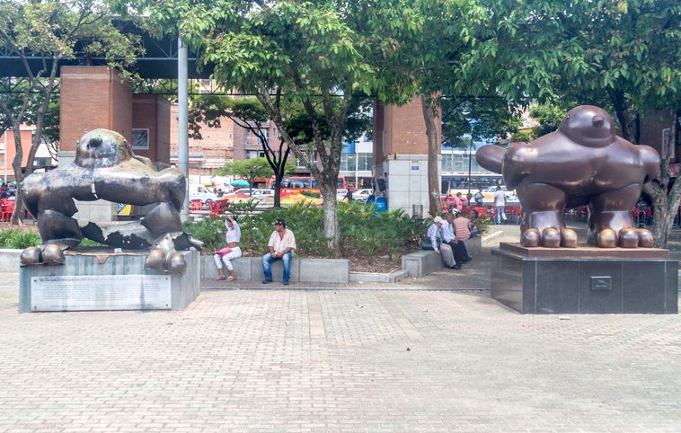

Do you sell coooooooo…ffee: The Colombian karma
Christmas in 2022 has been weird for me due to unexpected and undesired events. However, I wanted to make this post about my nationality for future reference as it is a common topic that brings uncomfortable talks. Indeed, I got used to the phrase “do you sell drugs?” within the first 10 minutes of an introductory conversation with someone new, even in a professional setting. For the record, I do not sell drugs and am not involved in any of those businesses. Nevertheless, the Colombian nationality seems like a curse due to unwanted fame from the 70’s - 90’s decades and TV shows with distorted information. I aim to demystify Colombian nationality from the point of view of a researcher living outside Colombia.
Keywords — Colombia, multiculturalism, immigration.
It is Colombia, not Columbia

I prefer to meet people who cannot locate Colombia on the map. The rule is if someone has little knowledge about this country is due to one out of three reasons: football, the Encanto movie, or drugs. For the first topic, the national team sucks these days, but some brilliant football players nail it in the top leagues worldwide. For example, watching Falcao or James on their best days was delightful. Regarding the Disney movie, I love it and encourage anyone who does not know about the country to watch it with some popcorn. Although I will talk about the film later, it summarizes the Colombian experience in around 100 minutes.
It is funny how we do not talk about the rich biodiversity in the country. Colombia has the amazon jungle and other natural paradises like alpine tundra ecosystems. Furthermore, a vast portion of the Latino urban music that people dance to in the discos comes from this country. Indeed, Shakira, one of the most exceptional singers of this century, is from Colombia, which is a fact that people tend to forget. Lastly, the coffee, bananas, or avocados in your kitchen likely come from Colombia.
Now, let us discuss the last item on the list. Oh, boi! When people who do drugs or know about Colombian history find out that I come from Medellin, their faces show a morbid expression immediately. It is impossible to deny that a considerable amount of cocaine consumed around the globe is produced there. However, reducing a country of more than 51 million people to mere drug exporters is a myopic and ignorant perception. As a Colombian, it is insulting how the media only talks about drugs from the point of view of gangsters and addicts. However, nobody is interested in showing the consequences of the drug war. There are victims, blood, poverty, enslaved people, forced displacements, and families who have lost innocent loved ones because someone on the other side of the planet wanted to be high for a few minutes. For instance, I have lost two uncles and one cousin in this nonsense war.
Violence and wars
The image below is “The birds of peace” sculpture by Fernando Botero. In my opinion, the most beautiful and tragic piece of art due to its story. As you can see, the bird on the left seems injured, while the one on the right is in good condition. The wounded bird was the first sculpture in San Antonio’s park, Medellin. In 1995, it was where terrorists made an attack with 10 kg of dynamite. The assault killed around 24 people and hurt hundreds who visited the park around 9:20 pm that Saturday.

We have not been at peace for a single time as a society. Only talking about the modern era, the Colombian conflict is the oldest civil war in the world. There is a peace agreement signed in 2016 by some of the actors in this conflict. However, the Colombian internal war is more complex than some paperwork. From the point of view of someone who is not an expert on this topic, I would define the Colombian war as a creepy mixture of the cold war with the drug war and a lot of urban and rural armed groups fighting for their ideals and business.
As the podcasters from “Estupido Nerd” said during a review of Disney’s Encanto movie, almost every Colombian family has a tragedy. We might take the meaning of the red in the flag too seriously, as our history is covered in blood. My grandparents had to live through the “Chusmas” war, my parents with the 70’s - 90’s violence from the cold and drug war, and my generation with a sophisticated and bloody version of everything.
Keep in mind that wars have conflicting parties and victims. A lot of victims, either direct or indirect victims. And sometimes, the world enjoys criminalizing those victims. In the case of Colombians, it seems like society thinks that every one of us is associated with the drug business. Xenophobic comments, “random” checks in the airports, discrimination in the workplace, or harassment in the streets, are typical situations that immigrant Colombians have to deal with every day.
Now, the bird on the right is a symbol of resilience. As a society, we have gone through violence and blood, but we try to stand up against adversities. For example, if you look at Medellin, it was the most dangerous city in the world during the 90’s decade. It was common to hear shootings during the night, and almost every day, there were murdered bodies on the streets. But this is 2022, and Medellin is an influential technology hub in the region where big companies are settling down. Furthermore, the city is a gorgeous tourist destination for anyone interested in a tropical place with a fascinating culture.
Some final thoughts
I am not patriotic and usually do not care about silly treatment due to my nationality. However, this post resulted from an unfortunate comment by someone I respected. So, at least, for one day, let me stop normalizing such behaviour and start talking about this xenophobia.
During my years outside the country, I have met amazing Colombians worldwide. They are fascinating engineers, mathematicians, carpenters, drivers, students, mothers, fathers, wives, husbands looking for a better future in a different country. Of course, bad guys are out there, but the good Colombians are more.
*Disclaimer: This post represents my personal opinion. I am not responsible for any content on external sites.